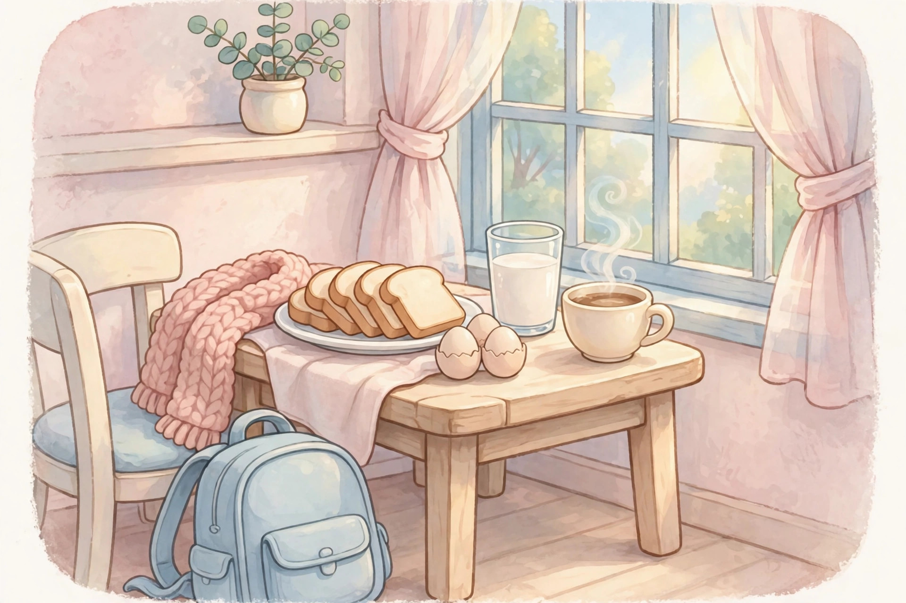

提示：如果頁面變成純文字、沒有圖片和播放按鈕，說明 Safari 閱讀器模式開了，點地址欄的書本圖標退出閱讀器，即可恢復彩色頁面。
在家吃早餐
좋은 아침이에요.
在家吃早餐，聊麵包、雞蛋、牛奶和咖啡，吃完去學校。

좋은 아침이에요.
오늘 아침은 뭐 먹어요?
빵하고 계란을 먹어요.
우유도 마셔요?
네, 우유도 마셔요.
커피도 한 잔 마셔요.
아침을 먹고 학교에 가요.
오늘 날씨가 추워요.
따뜻하게 입어요.
맛있게 드세요.
감사합니다. 좋은 하루 보내세요.
還沒播放，點上面的大按鈕開始。
慢速女聲朗讀，先聽一遍，再一句一句跟讀。如果大按鈕點了還是沒聲音，請點直接打開音頻，或點下面的備用朗讀。
逐句翻譯
- 早安。
- 今天早上吃什麼？
- 吃麵包和雞蛋。
- 也喝牛奶嗎？
- 是的，也喝牛奶。
- 還喝一杯咖啡。
- 吃完早餐去學校。
- 今天天氣很冷。
- 穿暖和一點。
- 請慢慢吃。
- 謝謝。祝你今天愉快。
文法講解
1. 「-하고」：意思是「和、與」，比較口語的說法
是什麼：把兩個名詞連起來，意思就是「和、與」，口語裡最常用。句型結構：名詞 + -하고 + 名詞。短文例句：빵하고 계란을 먹어요.（吃麵包和雞蛋。）再舉一例：친구하고 영화를 봐요.（和朋友一起看電影。）容易錯的地方：-하고 比較口語，正式場合多用 -와/과；不要在 -하고 後面再加 -와/과，說成 빵하고와 계란 是錯的。
2. 「-도」：意思是「也、還」，加在名詞後面
是什麼：加在名詞後面，表示「也、還」，意思是「這個也……」。句型結構：名詞 + -도。短文例句：우유도 마셔요.（也喝牛奶。）／ 커피도 한 잔 마셔요.（還喝一杯咖啡。）再舉一例：저도 학생이에요.（我也是學生。）容易錯的地方：-도 不能和 -은/는、-이/가 同時用在同一個名詞後面，例如 우유는도 마셔요 是錯的。
3. 「-고」：連接兩個動作，意思是「先……，再……」
是什麼：把兩個動作連起來，表示先做前一個，再做後一個。句型結構：動詞詞幹 + -고 + 動詞。短文例句：아침을 먹고 학교에 가요.（吃完早餐去學校。）再舉一例：밥을 먹고 자요.（吃完飯就睡覺。）容易錯的地方：-고 前後兩個動作通常是同一個人做的，順序不能隨便顛倒；먹고 가요 是「吃了再去」，가서 먹어요 意思就完全不同了。
常用詞彙
- 아침 早上（a-chim，近似「阿親」）—— 오늘 아침은 뭐 먹어요?（今天早上吃什麼？）
- 빵 麵包（ppang，近似「啪」）—— 빵하고 계란을 먹어요.（吃麵包和雞蛋。）
- 계란 雞蛋（gye-ran，近似「給-蘭」）—— 계란을 먹어요.（吃雞蛋。）
- 우유 牛奶（u-yu，近似「嗚-由」）—— 우유도 마셔요.（也喝牛奶。）
- 커피 咖啡（keo-pi，近似「考-皮」）—— 커피도 한 잔 마셔요.（還喝一杯咖啡。）
- 학교 學校（hak-gyo，近似「哈-給哦」）—— 학교에 가요.（去學校。）
- 춥다 冷（chup-da，近似「出-打」；現在式是 추워요）—— 오늘 날씨가 추워요.（今天天氣很冷。）
- 맛있다 好吃（ma-sit-da，近似「媽-西-打」；맛있게 是副詞形「好吃地」）—— 맛있게 드세요.（請慢慢吃。）
跟讀小提示
一句一句慢慢讀，句與句之間停一下；問句「뭐 먹어요?」「우유도 마셔요?」句尾要輕輕揚起；「따뜻하게」可以讀得重一點、暖一點。
留給你的問題
당신은 아침에 보통 뭐 먹어요?
（你早上通常吃什麼？）